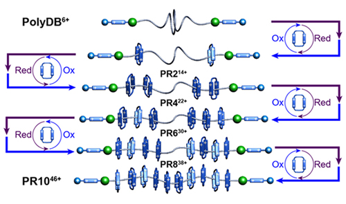
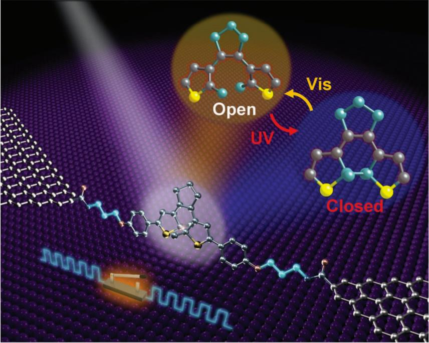
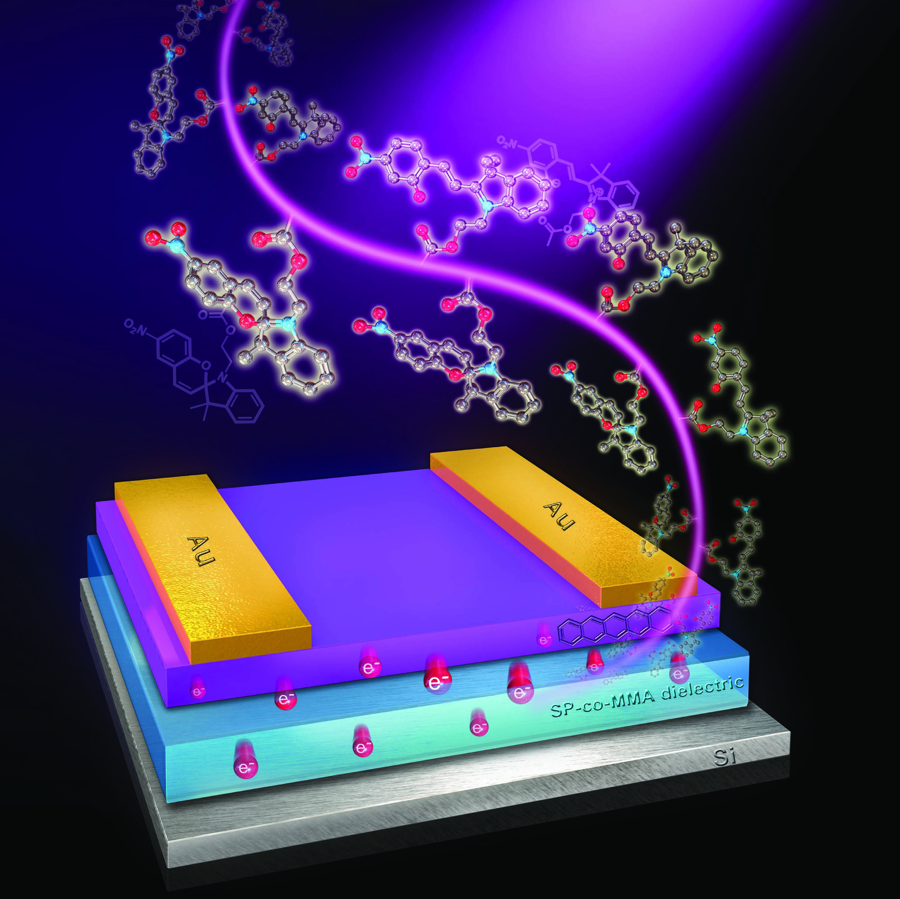

-
2021
22. “Promotion and Suppression of Single-Molecule Conductance by Quantum Interference in Macrocyclic Circuits.” Hongliang Chen#; Songjun Hou#; Qingqing Wu; Feng Jiang; Ping Zhou; Long Zhang; Yang Jiao; Bo Song; Qing-Hui Guo; Xiao-Yang Chen; Wenjing Hong*; Colin J. Lambert*; and J. Fraser Stoddart*. Matter. 2021, 4, 3662-3676.
21. “From Molecular to Supramolecular Electronics.” Hongliang Chen*; J. Fraser Stoddart*. Nature Reviews Materials. 2021,6, 804-828.
20. “Temperature-Triggered Supramolecular Assembly of Organic Semiconductors.” Hongliang Chen#; Weining Zhang#; Shizhao Ren; Xingang Zhao; Yang Jiao; Yu Wang; J. Fraser Stoddart*; Xuefeng Guo*. Advanced Materials. 2021,2101487.
19. “Electron-Catalyzed Dehydrogenation in a Single-Molecule Junction.” Hongliang Chen#; Feng Jiang#; Chen Hu#; Yang Jiao; Su Chen; Yunyan Qiu; Ping Zhou; Long Zhang; Kang Cai; Bo Song; Xiao-Yang Chen; Xingang Zhao; Michael R. Wasielewski; Hong Guo*; Wenjing Hong*; J. Fraser Stoddart*. Journal of the American Chemical Society. 2021,143, 8476-8487. (Highlighted by Nature Catalysis, 2021, 4, 444)
18. “Single-Molecule Charge Transport through Positively Charged Electrostatic Anchors.” Hongliang Chen#; Vitor Brasiliense#; Jingshan Mo; Long Zhang; Yang Jiao; Zhu Chen; Leighton O. Jones; Gen He; Qin-Hui Guo; Xiao-Yang Chen; Bo Song; George C. Schatz; J. Fraser Stoddart*. Journal of the American Chemical Society. 2021,143, 2886-2895.
-
2020
17. “Interface Engineering in Organic Field-Effect Transistors: Principles, Applications, and Perspectives.” Hongliang Chen#; Weining Zhang#; Mingliang Li; Gen He; Xuefeng Guo*. Chemical Reviews. 2020, 120, 2879-2949.
16. “Giant Conductance Enhancement of Intramolecular Circuits through Interchannel Gating.” Hongliang Chen#; Haining Zheng#; Chen Hu#; Kang Cai; Yang Jiao; Long Zhang; Feng Jiang; Indranil Roy; Yunyan Qiu; Dengke Shen; Yuanning Feng; Fehaid M. Alsubaie; Hong Guo*; Wenjing Hong*; J. Fraser Stoddart*. Matter. 2020, 2, 284-296.
15. “Stitching up the Belt[n]arenes.” Yunyan Qiu; Hongliang Chen; Yuanning Feng; Margaret E. Schott; J. Fraser Stoddart*. Chem. 2020, 6, 826-829.

14. “An Active Self-Assembled Monolayer Sensors for Trace Explosive Detection.” Mingliang Li#; Hongliang Chen#; Shuo Li; Guozhi Wang; Feng Wei; Xuefeng Guo*; Hailing Tu*. Langmuir. 2020, 36, 1462-1466.
13. “A Precise Polyrotaxane Synthesizer.” Yunyan Qiu; Bo Song; Cristian Pezzato; Dengke Shen; Wenqi Liu; Long Zhang; Yuanning Feng; Qing-Hui Guo; Kang Cai; Weixingyue Li; Hongliang Chen; Minh T. Nguyen; Yi Shi; Chuyang Cheng; R. Dean Astumian*; Xiaopeng Li*; J. Fraser Stoddart*. Science. 2020, 368, 1247-1253.(Highlighted by ESI)
 -
2019
12. “Multistep NucleationMultistep Nucleation and Growth Mechanisms of Organic Crystals from Amorphous Solid States.” Hongliang Chen#; Mingliang Li#; Zheyu Lu#; Xiaoge Wang#; Junsheng Yang; Zhe Wang; Fei Zhang; Chunhui Gu; Weining Zhang; Yujie Sun; Junliang Sun*; Wenguang Zhu*; Xuefeng Guo*. Nature Communications. 2019, 10, 3872.
11. “Precise Control of Interfacial Charge Transport for Building Functional Optoelectronic Devices.” Weining Zhang#; Hongliang Chen#; Xuefeng Guo*. Advanced Materials Technologies. 2019, 4, 1800358.
-
2018 & before
10. “Field-Effect Transistors based on in-situ Fabricated Graphene Scaffold-ZrO2 Nanofilms.” Qingqing Pang; Hongliang Chen; Xiuyan Wang; Tao Wang; Deyan Wang*; Shaoguang Feng; Hongliang Lu; Qiaowei Li*. Advanced Electronic Materials. 2018, 4, 1700424.
9. “Design of a Photoactive Hybrid Bilayer Dielectric for Flexible Nonvolatile Organic Memory Transistors.” Hongliang Chen; Nongyi Cheng; Wei Ma; Mingliang Li; Shuxin Hu; Lin Gu; Sheng Meng; Xuefeng Guo*. ACS Nano. 2016, 10, 436-445.
8. “Covalently-bonded Single Molecule Junctions with Stable and Reversible Photoswitched Conductivity.” Chuancheng Jia#; Agostino Migliore#; Na Xin#; Shaoyun Huang#; Jinying Wang; Qi Yang; Shuopei Wang; Hongliang Chen; Duoming Wang; Boyong Feng; Zhirong Liu; Guangyu Zhang; Da-Hui Qu; He Tian; Mark A. Ratner; H. Q. Xu*; Abraham Nitzan*; Xuefeng Guo*;. Science. 2016, 352, 1443-1445.(Highlighted by ESI)
7. “High-Efficiency Selective Electron Tunnelling in a Heterostructure Photovoltaic Diode.” Chuancheng Jia; Wei Ma; Chunhui Gu; Hongliang Chen; Haomiao Yu; Xinxi Li; Fan Zhang; Lin Gu; Andong Xia; Xiaoyuan Hou; Sheng Meng*; Xuefeng Guo*. Nano Letters. 2016, 16, 3600-3606.
6. “Photocontrol of Charge Injection/Extraction at Electrode/Semiconductor Interfaces for High-Photoresponsivity Organic Transistors.” Hongtao Zhang#; Hongliang Chen#; Wei Ma; Jingshu Hui; Sheng Meng; Wei Xu; Daoben Zhu*; Xuefeng Guo*. Journal of Materials Chemistry C. 2016, 4, 5289-5296.
5. “Solution-Processable, Low-Voltage and High-Performance Monolayer Field-Effect Transistors with Aqueous Stability and High Sensitivity.” Hongliang Chen#; Shaohua Dong#; Meilin Bai; Nongyi Cheng; Hao Wang; Mingliang Li; Huiwen Du; Shuxin Hu; Yanlian Yang; Tieying Yang; Fan Zhang; Lin Gu; Sheng Meng; Shimin Hou; Xuefeng Guo*. Advanced Materials. 2015, 27, 2113-2120.
4. “Synergistic Photomodulation of Capacitive Coupling and Charge Separation Toward Functional Organic Field-Effect Transistors with High Responsivity.” Hongtao Zhang; Jingshu Hui; Hongliang Chen; Jianming Chen; Wei Xu; Zhigang Shuai; Daoben Zhu; Xuefeng Guo*. Advanced Electronic Materials. 2015, 1, 1500159.
3. “Unique Role of Self-Assembled Monolayers in Carbon Nanomaterial-Based Field-Effect Transistors.” Hongliang Chen; Xuefeng Guo*. Small. 2013, 9, 1144-1159.
2. “Interface-Engineered Bistable [2]Rotaxane-Graphene Hybrids with Logic Capabilities.” Chuancheng Jia; Hao Li; Jiaolong Jiang; Jindong Wang; Hongliang Chen; Dennis Cao; J. Fraser Stoddart*; Xuefeng Guo*. Advanced Materials. 2013, 25, 6752-6759.
1. “Solution-Crystallized Organic Semiconductors with High Carrier Mobility and Air Stability.” Shaohua Dong; Hongtao Zhang; Liu Yang; Meilin Bai; Yuan Yao; Hongliang Chen; Lin Gan; Tieying Yang; Hong Jiang; Shimin Hou; Lijun Wan; Xuefeng Guo*. Advanced Materials. 2012, 24, 5576-5580.
-
patents
6. “Methods for Reducing Aldehyde Emissions in Polyurethane Foams.” 国际专利(PCT), WO2020/024231A1. Hongliang Chen, Zhengming Tang, Jian Zou, Shaoguang Feng, Degang Zhang, and Ping Zhang. 06.02.2020.
5. “Methods for Reducing Aldehyde Emissions in Polyurethane Foams.” 国际专利(PCT), WO2020/024233A1. Zhengming Tang, Hongliang Chen, Jian Zou, Shaoguang Feng, Steven Zhang, Degang Zhang, and Ping Zhang. 06.02.2020.
4. “Procédés de réduction des émissions d'aldéhyde dans des mousses de polyurethane.” 国际专利(PCT), WO2020/024235A1. Zhengming Tang, Hongliang Chen, Jian Zou, Shaoguang Feng, Degang Zhang, and Ping Zhang. 06.02.2020.
3. “Methods for Reducing Aldehyde Emissions in Polyurethane Foams.” 国际专利(PCT), WO2020/024236A1. Zhengming Tang, Jian Zou, Shaoguang Feng, Yuji Sasaki, Hongliang Chen, Degang Zhang, and Ping Zhang. 06.02.2020.
2. “Procédés de réduction des émissions d'aldéhyde dans des mousses de polyurethane.” 国际专利(PCT), WO2020/024230A1. Zhengming Tang, Jian Zou, Shaoguang Feng, Yuji Sasaki, Hongliang Chen, Haiying Li, Degang Zhang, and Ping Zhang. 06.02.2020.
1. “Photoisomeric Compounds and Device Comprising Same.” 中国专利CN107011317B, 20.03.2020/国际(PCT)WO2017/202340A1, 30.11.2017 / 欧洲专利EP3453705A4, 11.04.2019 / 日本专利JP6738440B2, 21.07.2020 / 美国专利US2020/0212328A1.02.07.2020. 郭雪峰，贾传成，辛娜，陈洪亮，李明亮，曲大辉.